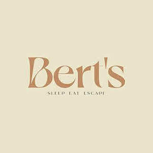

Trade Mark Journal No.2025/045 7 November 2025
UK00004256601 29 August 2025 (41,43)
Mark 1

Mark 2
- Class 41
- Rental services relating to equipment and facilities for education, entertainment, sports and culture; Providing facilities for entertainment; Entertainment booking services; Camp services (Holiday -) [entertainment]; Holiday camp services [entertainment].
- Class 43
- Hospitality services [accommodation]; Hospitality services [food and drink]; Catering services for hospitality suites; Corporate hospitality (provision of food and drink); Providing temporary accommodation as part of hospitality packages; Providing food and drink catering services for convention facilities; Providing food and drink catering services for exhibition facilities; Consultancy services in the field of food and drink catering; Hotel catering services; Providing food and drink for guests in restaurants; Catering services for providing European-style cuisine; Food and drink catering for banquets; Catering for the provision of food and beverages; Catering services for the provision of food and drink; Resort lodging services; Providing food and drink for guests; Catering of food and drinks; Hotel accommodation services; Catering for the provision of food and drink; Food and drink catering; Catering of food and drink; Catering (Food and drink -); Hotel restaurant services; Catering services for the provision of food; Providing hotel accommodation; Serving food and drink for guests in restaurants; Providing temporary lodging for guests; Hotel accommodation reservation services; Business catering services; Serving food and drink for guests; Camp services (Holiday -) [lodging]; Holiday camp services [lodging]; Provision of hotel accommodation; Restaurant services provided by hotels; Services for providing food and drink; Resort hotel services; Tourist camp services [accommodation]; Services for the preparation of food and drink; Food and drink preparation services; Hotel services; Holiday accommodation services; Providing restaurant services; Consulting services in the field of culinary arts; Restaurant services; Providing food and beverages; Travel agency services for reserving hotel accommodation; Provision of food and drink in restaurants; Consultancy services relating to hotel facilities; Restaurant services for the provision of fast food; Arranging of hotel accommodation; Arranging hotel accommodation; Club services for the provision of food and drink; Accommodation services; Booking services for holiday accommodation; Reservation services for accommodation; Accommodation reservation services; Restaurant reservation services; Providing guesthouse services; Food preparation services; Catering services; Services for providing food; Wine tasting services (provision of beverages); Services for the provision of food and drink; Take-away food and drink services; Reservation of hotel accommodation; Reservation and booking services for restaurants and meals; Catering; Hotel reservation services; Provision of food and beverages; Banqueting services; Reservation of tourist accommodation; Reception services for temporary accommodation [management of arrivals and departures]; Providing food and drink in bistros; Booking of hotel accommodation; Providing room reservation and hotel reservation services; Services for reserving holiday accommodation; Preparation of food and beverages.
BertsKG Ltd